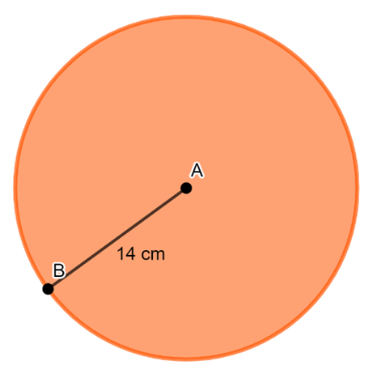
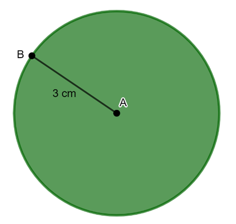
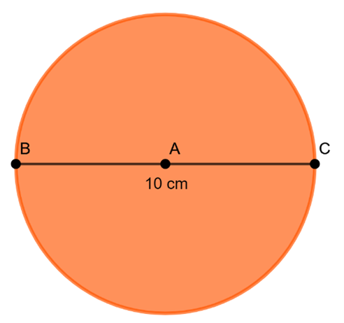
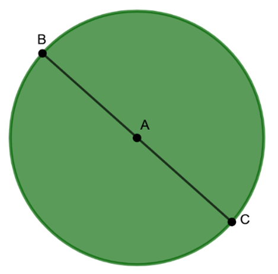

Menentukan Rumus Luas Lingkaran
-
Perhatikan gambar lingkaran di bawah ini
 Gambar 20 lingkaran
Gambar 20 lingkaran
-
Bagian lingkaran tersebut dibuat terbagi dengan kelipatan 2 bagian
Gambar 21 Lingkaran dibagi menjadi 2 bagian Gambar 22 Lingkaran dibagi menjadi 4 bagian
Gambar 22 Lingkaran dibagi menjadi 4 bagian
-
Kemudian potongan setiap bagian lingkaran tersebut disusun menjadi berbentuk seperti persegi panjang.
Gambar 23 Potongan disusun menyerupai persegi panjang
-
Selanjutnya geser titik slide untuk merubah jumlah potongan pada lingkaran tersebut. Semakin banyak potongannya maka akan semakin terlihat berbentuk persegi panjang.
Gambar 24 Susunan potongan juring lingkaran
Potongan bagian - bagian lingkaran tersebut dibagi menjadi beberapa juring, dan ketika disusun potongan tersebut menyerupai bentuk persegi panjang. Dari potongan yang disusun menyerupai bentuk persegi panjang tersebut, menunjukkan bahwa panjang dari persegi panjang sama dengan ukuran setengah keliling lingkaran dan lebarnya sama dengan ukuran jari - jari lingkaran.
Ingat kembali bahwa rumus keliling lingkaran adalah $K= 2 \pi r$, maka dapat dituliskan rumus setengah keliling lingkaran adalah
$ \frac{1}{2} K = \frac{1}{2} \times 2 \pi r $
$ \frac{1}{2} K = \frac{ \cancel{2} \pi r }{ \cancel{2} } $
Berdasarkan bentuk potongan - potongan lingkaran yang disusun menyerupai persegi panjang menunjukkan bahwa luas lingkaran sama dengan luas persegi panjang, dengan panjang $= \pi r$ dan lebar $= r$. Dengan begitu rumus luas lingkaran dapat dituliskan sebagai berikut :
Luas Lingkaran = Luas Persegi Panjang
= Panjang $\times$ Lebar
= $\pi r \times r$
Luas Lingkaran = $\pi r^{2} $
Jika diketahui diameter lingkarannya, dengan $d=2r$, maka $r= \frac{1}{2} d$ maka rumus untuk mencari luas lingkaran dapat dituliskan sebagai berikut :
Luas Lingkaran = $\pi r^{2} $
= $ \pi (\frac{1}{2}d)^2 $
= $ \pi (\frac{1}{2}d^4) $
Luas Lingkaran = $ \frac{1}{4} \pi d^2 $
Rumus Luas Lingkaran
$L = \pi r^2$ atau $L = \frac{1}{4} \pi d^2$
Keterangan:
$L$ = Luas Lingkaran
$\pi$ = nilai $3,14$ atau $\frac{22}{7}$
$r$ = jari-jari Lingkaran
$d$ = diameter Lingkaran
Contoh Soal
Perhatikan gambar lingkaran di bawah ini!
Jika diketahui jari - jari lingkaran 14 cm, maka berapa luas lingkaran tersebut?
Penyelesaian:
Diketahui:
$r = 14 cm$
Ditanya:
Luas = ... ?
Jawaban:
Luas = $ \pi r^{2} $
Luas = $ \frac{22}{7} \times 14^{2} $
Luas = $ \frac{22}{7} \times 14 \times 14 $
Luas = $ \frac{22}{ \cancel{7} } \times \cancel{14} \times 14 $
Luas = $ 22 \times 2 \times 14 $
Luas = $ 616 cm^{2} $
Perhatikan gambar lingkaran di bawah ini!
Hitunglah berapa luas lingkaran tersebut?
Penyelesaian:
Diketahui:
$r = 3 cm$
Ditanya:
Luas = ... ?
Jawaban:
Luas = $ \pi r^{2} $
Luas = $ 3.14 \times 14^{2} $
Luas = $ 3.14 \times 14 \times 14 $
Luas = $ 3.14 \times 9 $
Luas = $ 28.26 cm^{2} $
Perhatikan gambar lingkaran di bawah ini!
Jika diketahui diameter lingkaran adalah 10 cm, berapakah luas lingkaran tersebut?
Penyelesaian:
Diketahui:
$d = 10 cm$
Ditanya:
Luas = ... ?
Jawaban:
Luas = $ \frac{1}{4} \pi d^2 $
Luas = $ \frac{1}{4} \times 3.14 \times 10^2 $
Luas = $ \frac{1}{4} \times 3.14 \times 10 \times 10 $
Luas = $ \frac{1}{4} \times 3.14 \times 100 $
Luas = $ \frac{1}{4} \times 314 $
Luas = $ 78.5 cm^{2} $
Perhatikan gambar lingkaran di bawah ini!
Jika diketahui diameter lingkaran adalah 21 cm, hitunglah berapa luas lingkaran tersebut?
Penyelesaian:
Diketahui:
$d = 21 cm$
Ditanya:
Luas = ... ?
Jawaban:
Luas = $ \frac{1}{4} \pi d^2 $
Luas = $ \frac{1}{4} \times \frac{22}{7} \times 21^2 $
Luas = $ \frac{1}{4} \times \frac{22}{7} \times 21 \times 21 $
Luas = $ \frac{1}{4} \times \frac{22}{\cancel{7}} \times \cancel{21} \times 21 $
Luas = $ \frac{1}{4} \times 22 \times 3 \times 21 $
Luas = $ \frac{1}{4} \times 1386 $
Luas = $ 346.5 cm^{2} $
Pak Bayu akan membuat sebuah taman bunga berbentuk lingkaran dengan jari - jari 15 m. Tentukanlah luas taman bunga yang akan dibuat Pak Damar!
Penyelesaian:
Diketahui:
$d = 15 cm$
Ditanya:
Luas = ... ?
Jawaban:
Luas = $ \pi r^{2} $
Luas = $ 3.14 \times 15^{2} $
Luas = $ 3.14 \times 15 \times 15 $
Luas = $ 3.14 \times 225 $
Luas = $ 706.5 cm^{2} $
Sebuah lingkaran memiliki luas $314 cm^2$. Untuk nilai $π = 3.14$, tentukanlah nilai jari - jari lingkaran tersebut!
Penyelesaian:
Diketahui:
$Luas = 314 cm^2$
$ \pi = 3.14 $
Ditanya:
$r$ = ... ?
Jawaban:
Luas = $ \pi r^2 $
$314 cm^2 = 3.14 \times r^2 $
$ r^2 = \frac{314}{3.14} $
$ r^2 = 100 $
$ r = \sqrt{100} $
$ r = 10 cm $